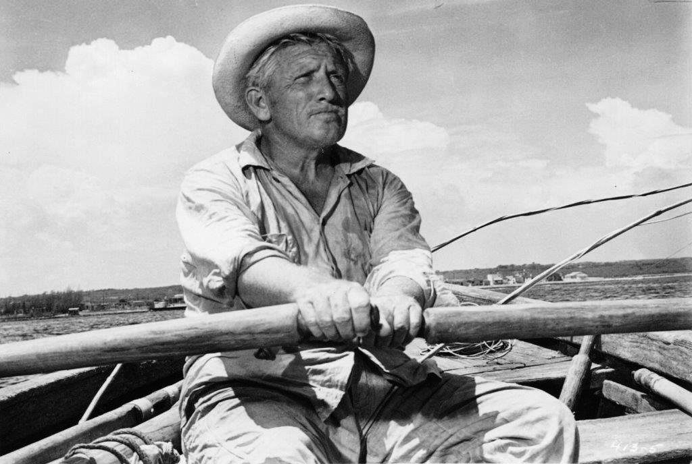
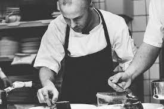

La historia de Mariscos El Campeón se comienza en el año de 1970, en Guadalaja, Jalisco con el honorable señon Jesús Ávalos.

Con apenas 30 años de edad, el señor Jesús se veía en la compleja situación de poder mantener a una familiar de 9 integrantes. Dada su condición económica jamás pudo hacer más que trabajar, pero eso sí, gozaba de un magnífico don que estaba por descubrir.

El señor Jesús decidió cocinar una de sus comidas preferidas de aquellos días de pesca que vivió en su infancia.... Un coctel de camarón. Orgullo de su platillo lleno de recuerdos y cariño, lo mostró a sus conocidos.
Todos sus conocidos quedaron maravillados ante tan exquisito sabor que sus paladares jamás habían probado. El señor Jesús se asombró ante esto, y fue así como decidió probar un negocio de mariscos.
Con su magnifico sazón, todas las personas que lo probaban quedaban maravilladas, fue así como comenzó "MARISCOS EL CAMPEÓN".
Ahora, 50 años después sus hijos continúan su legado...